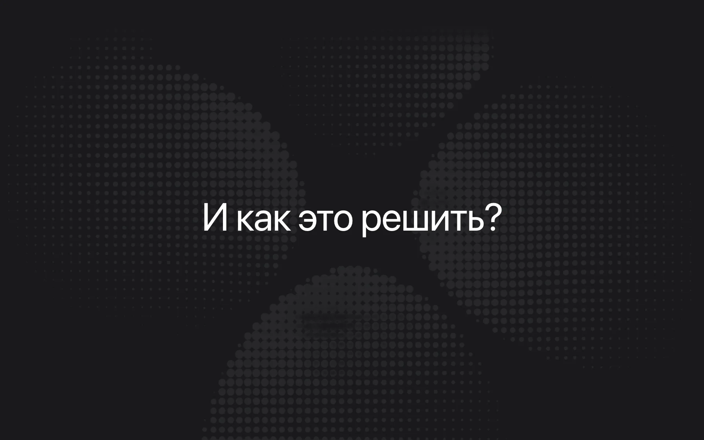
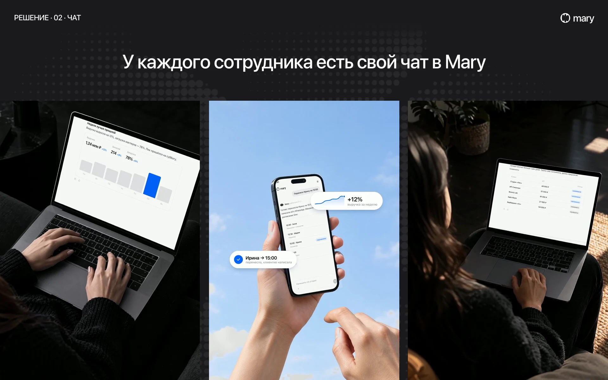
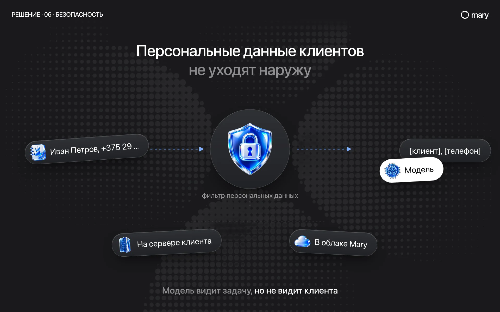
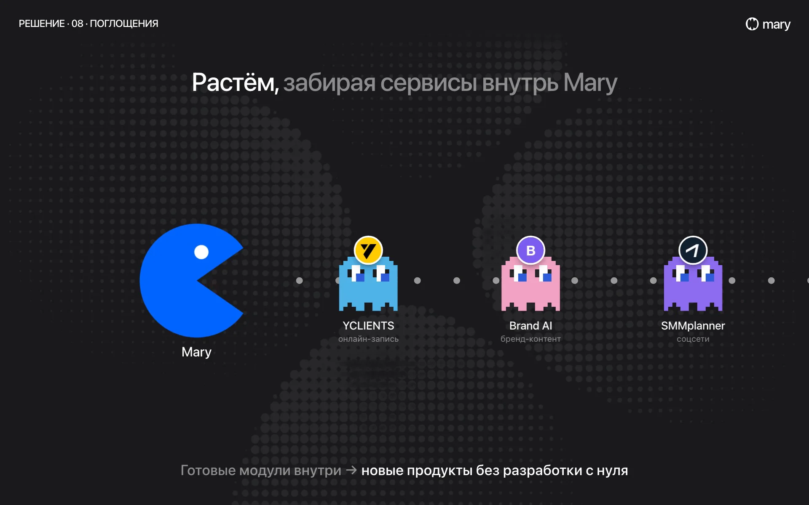
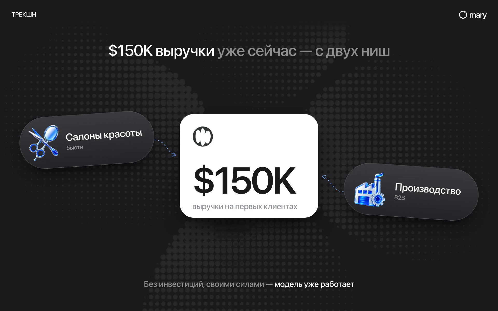
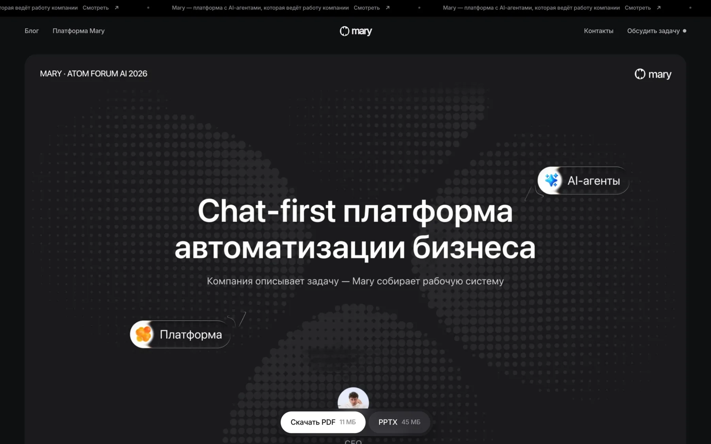

01Питч-дек
Презентации
Для выступления перед инвесторами я собрала питч-дек: проблема, решение, как работает продукт, рынок, выручка и команда. Каждый слайд держит одну мысль, цифры крупно, всё остальное мелко.
Часть слайдов я оживила моушеном, чтобы на сцене продукт показывался в движении. Есть PDF и PPTX на русском и английском и веб-версия прямо на сайте. Запись выступления мы выложили на YouTube.
- Слайды16 слайдов, из них 12 с моушеном
- ФорматыKeynote, PPTX, PDF RU/EN, веб-версия на сайте
- Где жилВыступление перед инвесторами, рассылка фондам





